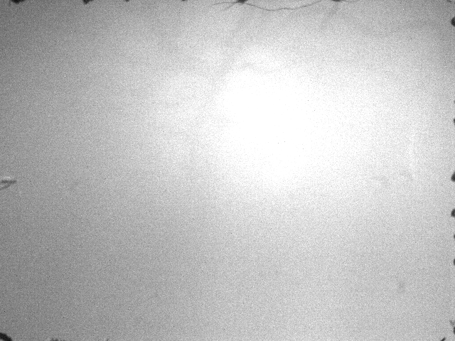
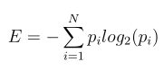
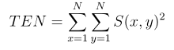

First part
In the first part, all video frames are analysed
to determine, what frames are not suitable for registration algorithm - those frames may be written to the
final video witout any changes. Typical example of skipped video frame is shown below.

Entropy and tennengrad
The entropy and variation of tennengrad operator are calculated for all video frames. To calculate entropy, it is necessary
to filter a frame with median filter (window size 5). The video frame is then convolved with Sobel operator for both axes.
Then the entropy can be calculated from the frame's histogram using the equation below. When the entropy is low,
it may indicate the frames is blurred or contains an artefact.

Tennengrad operator is used to determine image sharpeness and it is calculated using equation

The equation requires the threshold is applied on an image S(x,y), but because of high variability of videos
the algorithm uses average value of gradient amplitudes of a frame S(x,y).
Referential video frame identification
The referential video frame (RVF) is found using previously computed entropy values. Because the frame with the maximum
entropy needn't to be the best video frame in the video, the RVF is the frame with 20th highest entropy value. Number
twenty was derived empirically.
First suitability check
The technique with two thresholds is used to determine if the frames are suitable for
registration or not. Because the tilt of the entropy and tennengrad curve can vary video from video, the best approach
was to devide the entropy values into several "windows". The median of entropy values in the each window was calculated and
then the thresholds were applied.